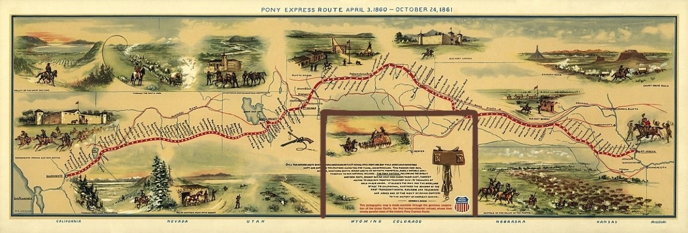

We are putting together an exciting plan to explore the remote, scenic backroads following the historic Pony Express Trail across Nevada and Utah, as well as backcountry routes surrounding US Route 50 in Nevada, famously known as the "Loneliest Road in America." Our destination includes historic Pony Express relay stations, high desert mountain passes, and Dave Deacon Campground nestled in the Wayne E. Kirch Wildlife Management Area.
📍 Information
- Trip Status: Planning
- Team Lead: Mike Norton
- Route: Livermore → Reno, NV → Highway 50 → Hot Creek (Wayne E. Kirch WMA) → Utah Pony Express Trail
Route Overview & Points of Interest
The Loneliest Road in America & The Pony Express Route
In July 1986, Life magazine famously labeled US Route 50 in Nevada as the "Loneliest Road in America," claiming it lacked points of interest and warning drivers they needed "survival skills." Nevada officials embraced the title as a marketing slogan. The highway traverses Nevada's classic "basin and range" topography, roughly paralleling the historic Pony Express Trail and the Overland Stagecoach route, offering scenic, rugged backcountry bypasses across Nevada into Utah.
📘 Highway 50 Survival Guide & Stamp Book
Each participant can request an official Highway 50 Survival Guide & Passport from the Nevada Commission on Tourism! Carry your stamp book along the trip and get it stamped at designated official stops along the route (including Fernley, Fallon, Middlegate, Austin, Eureka, and Ely) to prove you've traveled the Loneliest Road in America. Once stamped, you can submit it to receive an official certificate of survival and a commemorative lapel pin.
The Pony Express Trail
We will be following a major portion of the historic Pony Express Trail. This legendary mail route operated from April 1860 to October 1861, connecting Missouri to California. It is a symbol of American West history, where riders galloped across the vast landscapes we will be exploring across Nevada and Utah.
For more history and maps, visit the National Park Service - Pony Express Historic Trail.

Detailed Route & Itinerary
Total Distance: Livermore to Reno ~170 mi, then east across Nevada on US-50 ("The Loneliest Road in America") to the Hot Creek area via Ely and SR-318, continuing into the Utah western desert Pony Express corridor.
Reno → Fernley, NV
East on I-80 to the West Main exit (Fernley), then Hwy 50 east to Fallon (~35 mi total from Reno; 27 mi Fernley→Fallon on Hwy 50).
Gas at the Fernley exit: Pilot Flying J and Loves Travel Center.
Fallon → Middlegate Station (42 mi)
Middlegate Station
Middlegate sits at the junction of Hwy 50 and Hwy 361, in a natural gap between two mountain "gates." The name comes from surveyor James H. Simpson, who mapped a central overland route across Nevada in 1859 and referred to the mountain cuts along his path as "gates" — Westgate, Middlegate, and Eastgate. The Overland Stage & Freight Company built a station here in 1859 to serve travelers and the gold/silver mines around Tonopah and Ely, and it briefly served as a Pony Express relay station for the full 18 months the Express operated (April 1860–October 1861). After the Express folded, Middlegate kept working as a stage and freight stop into the early 1900s, then sat along the Lincoln Highway (America's first coast-to-coast paved road) once automobiles took over. A 1962 realignment of Hwy 50 bypassed it and nearly killed the business, but it's been continuously run as a bar/café since Ida Ferguson restored it in 1942; the Stevensons have owned it since 1984. Today it's known for the Middlegate Monster Burger (finish it, get a free t-shirt), a ceiling covered in dollar bills, and its proximity to the famous Shoe Tree on Hwy 50. It also functions as the only gas for roughly 50 miles in either direction.
On site: Great burgers, historic bar/restaurant. Free dispersed camping in the large dirt lot (generator noise reported at night).
Middlegate → Cold Springs Pony Express Station (12 mi)
Cold Springs Pony Express Station (Ruins) — 39.3843°N, 117.82751°W
Built in March 1860 by Superintendent Bolivar Roberts and J.G. Kelly as one of the original Pony Express relay stations, using massive native rock walls (4–6 ft thick) enclosing living quarters, a barn, storage, and a corral — animal body heat helped keep the station warm in winter, with only a single small fireplace otherwise. Cold Springs has a violent history: in May 1860, during the Pyramid Lake War, Paiute warriors killed the station keeper and drove off the horses; the station was later rebuilt with gun ports for defense. This was also a stop on "Pony Bob" Haslam's legendary long ride — history's longest single continuous Pony Express run — where he found the station burned and its keeper dead after a round trip through hostile territory. The site (listed on the National Register of Historic Places in 1978) still shows substantial standing walls, window and gun openings, and a fireplace, reached via a roughly 1.5-mile trail from a parking pullout across the highway. A separate Overland Stage station and a telegraph repeater station once stood nearby as well.
No camping at the ruins themselves (vault toilet at the trailhead pullout; the nearby Cold Springs Station Resort has a restaurant/RV park if needed).
Cold Springs → Overland Stage Stop ruins (22 mi)
Overland Stage Station Ruins (roadside, Hwy 50) — 39.5672°N, 117.51005°W
This stretch of US-50 also parallels the separate Overland Mail & Stage Line (1861–1869), which mostly followed the Pony Express route but sometimes diverged onto its own alignment (e.g., around Cape Horn near Austin). Several stage-only station ruins survive as rock corrals and building foundations along this corridor — likely candidates near this location include the New Pass Station site (about 25 miles west of Austin) or a Dry Creek/Overland-era stage stop, both built to shelter drivers, change teams, and offer blacksmith and wagon-repair services for stagecoach travelers making the grueling, pricier-than-$200 St. Joseph–to–San Francisco run (young Samuel Clemens rode this route and wrote about it in Roughing It). These stations were generally simple stone-and-willow structures, and what's left today is mostly low rock walls and foundation outlines.
Overland Stage Stop → Stokes Castle / Austin (23 mi)
Stokes Castle — 39.49032°N, 117.07924°W
A striking three-story granite tower on a bluff just west of Austin, built in 1896–97 by Anson Phelps Stokes — a New York mine developer, railroad magnate, and banker who financed the Nevada Central Railroad connecting Austin's silver mines to the transcontinental line. He modeled the tower after a medieval watchtower he'd admired in the Roman countryside (Campagna) in Italy, and built it as a summer home for his sons using hand-hewn native granite raised into place with a hand winch. Each floor had its own fireplace and view of the Reese River Valley, with balconies cantilevered on old railroad rails. Despite the effort, the Stokes family only ever stayed here for a few weeks total across 1897–98 before selling the mine and never returning. The castle sat abandoned and deteriorating for decades — even threatened with relocation to the Las Vegas Strip in the 1950s — until a Stokes relative bought and preserved it in 1956. Added to the National Register of Historic Places in 2003, it's free to visit (fenced perimeter, sunrise to sunset) via a short dirt road off Hwy 50.
Austin, Nevada
A former silver boomtown founded in 1862 after a stagecoach driver reportedly kicked up ore-bearing rock near here; the strike triggered a rush that briefly swelled the town to over 10,000 people (today under 200). Nicknamed the "City of Churches" for its trio of surviving 19th-century churches, Austin still has the International Hotel (Nevada's oldest hotel, moved here from Virginia City in 1863) and sits roughly at the midpoint of the "Loneliest Road."
Gas available in Austin.
Austin → Bob Scott Campground (5 mi)
Bob Scott Campground
A U.S. Forest Service campground (Humboldt-Toiyabe National Forest) at Bob Scott Summit, about 6 miles east of Austin at ~7,200 ft in pinyon-juniper forest — a cool break from the desert valleys below. First built in the 1960s, it has ~9–10 individual sites plus a group site, picnic tables, and fire rings; it's long been a favorite overnight stop for cross-Nevada travelers on Hwy 50. Note: the campground underwent a significant renovation (water system, roads, restrooms) that closed it for much of 2025 into 2026 — worth a quick check that it's back open and the potable water/restroom status matches what's below before you count on it.
On site (per listed info): $10/night, toilets, potable water. (Confirm reopening/current conditions before the trip.)
Bob Scott → Hickison Petroglyphs (14 mi)
Hickison Petroglyph Recreation Area
A BLM site at Hickison Summit, at the boundary of the Toquima and Simpson Park mountain ranges, roughly 24 miles east of Austin. The petroglyphs — carved into soft volcanic tuff — are attributed to prehistoric peoples and the Western Shoshone, who lived and hunted here for an estimated 10,000 years; the area also has associations with bighorn sheep hunting funnels, since passes like this were natural ambush points. A half-mile self-guided interpretive trail winds past the main petroglyph panels, with additional overlook loops offering views across Big Smoky Valley and the Toiyabe and Toquima ranges. Silver was discovered near here (close to Austin) in 1862, tying the area into the broader mining-boom story of the region as well.
On site: ~16–20 dispersed campsites, toilets, trash service, no potable water — free, first-come/first-served, open year-round.
Hickison → Eureka, NV (43 mi)
Eureka, Nevada
Founded in 1864 when prospectors out of Austin struck silver-lead ore nearby; by the late 1870s Eureka was Nevada's second-largest mineral producer (after the Comstock Lode) and briefly the state's second-biggest city, with a population that peaked around 9,000–10,000, more than 100 saloons, 16 smelters (earning it the nickname "Pittsburgh of the West"), and five fire departments. Falling silver/lead prices and smelter closures in the 1890s emptied the boomtown out, but Eureka's brick downtown survived remarkably intact. Highlights include the Eureka Opera House (built 1880, restored 1993, still an active venue), the Eureka County Courthouse (1879, still in use — one of only two 19th-century courthouses still serving as active county government in Nevada), and the Eureka Sentinel Museum, a former newspaper office with original 1870s printing equipment. Eureka bills itself as "The Friendliest Town on the Loneliest Road."
Gas available in Eureka.
Eureka → Illipah Reservoir (32 mi)
Illipah Reservoir Recreation Area
A small (70-surface-acre) reservoir created in 1953 when Illipah Creek was dammed for irrigation, later enlarged in 1981 with Nevada Department of Wildlife involvement; it sits on private land with adjacent BLM-managed recreation access under a cooperative agreement. It's stocked with rainbow trout and holds a self-sustaining brown trout population, popular for both open-water and winter ice fishing (Dec–Feb). The BLM/NDOW-maintained campground sits on a windy plateau overlooking the water, roughly 37 miles west of Ely — nearby ghost towns like Hamilton and Treasure City (once famous for some of Nevada's purest silver strikes) are within reach for those with extra time.
On site: Free BLM dispersed-style campground (~15 sites), toilets, trash service, no potable water.
Illipah → Ely, NV (28 mi)
Ely, Nevada
Originally a stagecoach stop on the Pony Express/Central Overland Route, Ely didn't boom until copper was discovered in 1906 — later than most other Hwy 50 mining towns. The Nevada Northern Railway, built 1905–06, hauled ore roughly 150 miles from the mines at Ruth to a smelter at McGill, run by the Nevada Consolidated Copper Company (with mining pioneer Daniel Jackling's open-pit methods playing a key role). Kennecott Copper eventually took over operations and shut the mines/smelter down in the late 1970s as copper prices collapsed; the 56-acre East Ely rail yard was donated to a local foundation rather than dismantled, and it's now the Nevada Northern Railway Museum — a National Historic Landmark and, by many accounts, the best-preserved historic short-line railroad in the country, still running steam and diesel excursions (including the popular October "Ghost Train of Old Ely"). Ely also serves as the main gateway to Great Basin National Park.
Gas, groceries, sightseeing available in Ely (Nevada Northern Railway Museum, historic downtown, etc.).
Ely → Dave Deacon / Hot Creek Campground (~55 mi via Hwy 6 to SR-318)
Dave Deacon Campground & Hot Creek — Wayne E. Kirch Wildlife Management Area
The Kirch WMA (14,800+ acres in the White River Valley) is managed by the Nevada Department of Wildlife, not the BLM — it was purchased in 1959 after Nevada Fish & Game recognized the area's wildlife value, following decades of ranching (the Adams-McGill Company operated a large ranching empire here from the early 1900s; the Hot Creek/Sunnyside ranches were run by Ervin Hendrix from 1943–1959). It was formally established as the Kirch WMA in 1968, named for Nevada Fish & Game Commissioner Wayne E. Kirch. The centerpiece is the Hot Creek Refugium — a National Natural Landmark and critical habitat for the endangered Moorman White River springfish — a strikingly clear, Caribbean-blue warm spring good for a soak (it's warm, not hot). The valley has five reservoirs for fishing, plus strong birdwatching (orioles, meadowlarks, yellow-headed blackbirds). Dave Deacon Campground itself sits about a mile from the springs, at the end of a graded gravel road off SR-318; it's free, first-come/first-served, with an 8-day stay limit.
On site: Potable water, dump station, some shade structures/awnings, few trees, tables, fire pits, toilets (pit/vault). Cell service is spotty to none.
Dates
April 30 – May 9, 2027
Meet-up Location
Date: Friday, April 30, 2027
Time: 7:00 AM
Location: McDonald's at Santa Rita and Highway 580 E. (Standard Deployment Point)
37°42'02.9"N 121°52'10.7"W
37.700795, -121.869642
Camp Location
Location: Dave Deacon Campground (Wayne E. Kirch Wildlife Management Area), near Lund,
NV
Details: Free public campground, first-come first-served, 8-day limit. Vault toilets,
picnic tables, fire rings, potable water, and an RV dump station. Pack-it-in, pack-it-out. The warm Hot Creek Springs
(~80-85°F) is located about 1 mile away (National Natural Landmark and endangered Moorman White River
Springfish habitat).
38°41'14.2"N 115°06'35.6"W
38.411427, -115.109885
Fire Restrictions & Permits
Current as of September 2, 2026
Fire Restrictions: The route traverses Nevada BLM lands (Battle Mountain and Ely Districts), Utah BLM lands (West Desert District), Humboldt-Toiyabe National Forest, and the Wayne E. Kirch Wildlife Management Area (NDOW). At developed campgrounds (such as Dave Deacon Campground), campfires and charcoal fires are permitted only in designated metal fire rings/grills unless emergency Stage 2 restrictions are enacted. For dispersed camping, verify active seasonal restrictions before lighting any open flame. Always ensure fires are dead out before leaving.
Permits & Stoves: Portable propane and gas stoves with a shut-off valve are permitted. Nevada and Utah do not require a statewide campfire permit for general BLM/NDOW lands, but all participants must follow NDOW and BLM fire safety regulations.
Weather
Preparing for the trip, check the weather at our key locations:
Current Weather
Expected Trip Weather
Get Ready Before We Go
🛑 SAFETY REQUIREMENTS
Rear Amber Chase Light and HAM Radio communications are REQUIRED to travel with the group.
Why Amber Chase Lights?
Dusty trails are common – amber lights penetrate dust far better than white or red, helping prevent rear-end collisions in low visibility. Learn more about Why Chase Lights?
HAM Radio
Program to 146.460 MHz (simplex). Handhelds work great even without a license for listening.
If you don't have a ham radio yet, check out our guide to get started.
Other Essentials
- Offline navigation (download GPX from Rally Point – limited/no cell service)
- Extra fuel
- Off-road tires, full-size spare, recovery gear
- Plenty of water, desert prep, meds, emergency kit
Group Trip Agreement & Waiver
Before signing up, please review the Voluntary Acknowledgment of Risk and Group Trip Agreement. By RSVP'ing and participating in this trip, you certify that you have read, understood, and voluntarily agreed to these terms.